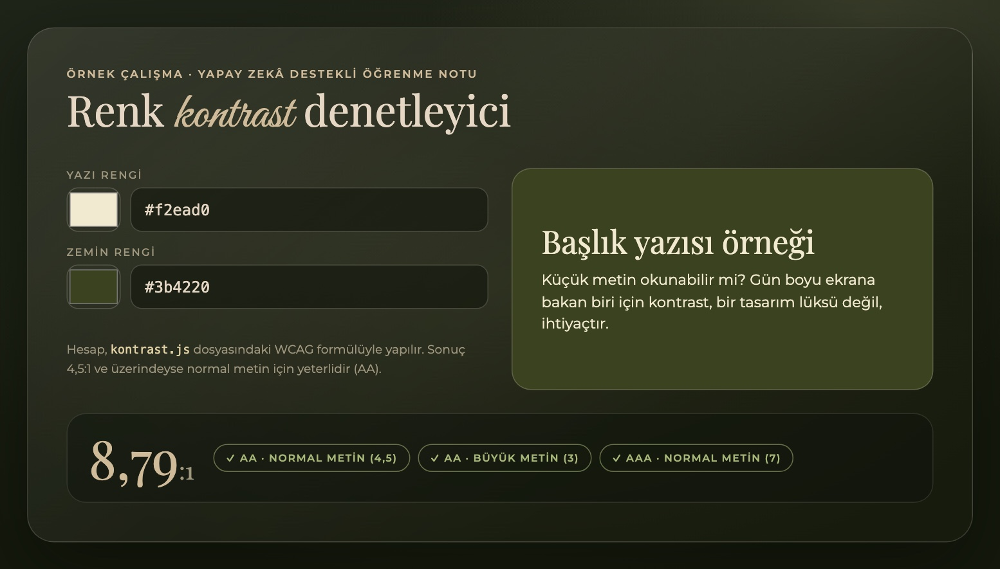

Yapay zekâ nedir ve nasıl çalışır?
Yapay zekâ, bilgisayarların insana özgü sayılan işleri (dili anlamak, görüntü tanımak, bir sonraki adımı tahmin etmek) örneklerden öğrenerek yapabilmesidir. Klasik bir programda kuralları biz yazarız: “şu olursa bunu yap”. Yapay zekâda ise kuralları tek tek yazmak yerine çok sayıda örnek gösteririz ve sistem kalıpları kendisi çıkarır.
Bir sohbet modeli yazarken aslında “bu cümlenin devamında en olası kelime hangisi?” sorusunu çok hızlı ve çok kez cevaplar. Bu yüzden akıcı konuşur; ama bir şeyi bildiği için değil, örüntüyü sürdürdüğü için konuşur. Bu ayrım, yazının geri kalanındaki tavsiyelerin temelidir.
- Model
- Örneklerden öğrenmiş matematiksel yapı. Bir tür “öğrenilmiş tarif defteri”.
- Veri seti
- Modelin öğrenirken gördüğü örneklerin tamamı.
- İstem
- Modele yazdığımız soru ya da talimat. Ne kadar net olursa cevap o kadar işe yarar.
- Halüsinasyon
- Modelin doğru görünen ama uydurma bilgi üretmesi. Çok ikna edici olabilir.
Günlük hayatta yapay zekâ
Çoğu zaman fark etmiyoruz, çünkü iyi çalışan teknoloji görünmez olur:
- Telefon kamerasındaki portre ve gece modları, fotoğraf düzeltme araçları,
- Müzik ve video uygulamalarının “bunu da sevebilirsin” önerileri,
- Çeviri uygulamaları ve yazarken çıkan sözcük tahminleri,
- Harita uygulamalarının trafik ve varış süresi tahminleri.
Eğitimde ve yazılım geliştirmede
Eğitimde bir konuyu farklı anlatımlarla tekrar açıklatmak, örnek soru üretmek ya da uzun bir metni özetlemek mümkün. Yazılımda ise kod önerisi almak, bir hata mesajının ne dediğini öğrenmek, test yazmak ve belgelendirme hazırlamak en yaygın kullanımlar. Ben Akdeniz Üniversitesi’nde Bilgisayar Programcılığı okuyorum, ayrıca Anadolu Üniversitesi’nde Yapay Zekâ Destekli Kodlama programını takip ediyorum; yani konuya bir öğrenci olarak, merakla ve temkinle yaklaşıyorum.
Kod yazarken yapay zekâdan nasıl yararlanılır?
- Küçük ve net iste. “Sitemi yap” yerine “bir hex rengin parlaklığını hesaplayan JavaScript fonksiyonu yaz” gibi tek parçalık bir iş tanımla.
- Anlamadığın satırı sor. Cevabı kopyalamak yerine, her satırın ne yaptığını açıklatıp kendi cümlelerinle tekrar etmeye çalış.
- Çalıştır ve test et. Sonucu, cevabını önceden bildiğin örneklerle karşılaştır.
- Kodu sahiplen. Anlamadığın bir kodu projene koyma; hata çıktığında düzeltecek kişi sensin.
Çalışan bir örnek: renk kontrast denetleyici
Bu yazı için yapay zekâ yardımıyla küçük bir araç hazırlattım: iki rengi karşılaştırıp yazının okunabilir olup olmadığını söyleyen bir renk kontrast denetleyici. Web tasarımında erişilebilirliğin temel kurallarından biri, yazı ile zemin arasındaki kontrast oranının WCAG ölçütüne uymasıdır: normal metin için en az 4,5:1.
// Bir renk kanalını (0–255) göz algısına uygun "doğrusal" değere çevirir
function kanal(c) {
c /= 255;
return c <= 0.04045 ? c / 12.92 : Math.pow((c + 0.055) / 1.055, 2.4);
}
// Rengin göreli parlaklığı (0 = siyah, 1 = beyaz)
function parlaklik(hex) {
const [r, g, b] = hex.match(/\w\w/g).map((h) => parseInt(h, 16));
return 0.2126 * kanal(r) + 0.7152 * kanal(g) + 0.0722 * kanal(b);
}
// İki renk arasındaki WCAG kontrast oranı (1 ile 21 arası)
function kontrast(renk1, renk2) {
const [acik, koyu] = [parlaklik(renk1), parlaklik(renk2)].sort((x, y) => y - x);
return (acik + 0.05) / (koyu + 0.05);
}Kod üç küçük parçadan oluşuyor. kanal() her renk kanalını insan gözünün algısına uygun hâle getirir; parlaklik() kırmızı, yeşil ve maviyi gözün duyarlılığına göre (en çok yeşile) ağırlıklandırarak tek bir parlaklık değeri üretir; kontrast() ise açık ve koyu rengin parlaklıklarını oranlar.
Doğruluk nasıl kontrol edildi?
Yapay zekâdan gelen koda güvenmeden önce, cevabı bilinen örneklerle denemek gerekir. Sık görülen bir hata, yukarıdaki kanal() adımını atlayıp doğrudan 0–255 değerleriyle hesap yapmaktır; böyle bir kod ilk bakışta çalışır ama yanlış sonuç verir. Bu yüzden bilinen değerlerle karşılaştırma şart:
| Yazı | Zemin | Hesaplanan | Beklenen / yorum |
|---|---|---|---|
#000000 | #ffffff | 21,00:1 | Beklenen en yüksek değer (21:1) ✓ |
#ffffff | #ffffff | 1,00:1 | Aynı renk, kontrast yok (1:1) ✓ |
#777777 | #ffffff | 4,48:1 | Eşiğin hemen altında: AA’yı geçemez ✓ |
#767676 | #ffffff | 4,54:1 | Eşiği az farkla geçer ✓ |
#f2ead0 | #3b4220 | 8,79:1 | Bu sitedeki krem / yosun çifti: AAA düzeyinde ✓ |

Web tasarımı, içerik üretimi ve dijital pazarlamada rolü
Web tasarımında yapay zekâ ilk taslak fikirleri, renk paleti önerilerini ve erişilebilirlik kontrollerini hızlandırır. İçerik üretiminde başlık alternatifleri, özet ve çeviri taslakları çıkarır. Dijital pazarlamada reklam metni varyasyonları ve hedef kitle fikirleri sunar. Hepsinde ortak risk, her şeyin birbirine benzemesidir: aynı araçtan çıkan ilk taslaklar genelde ortalama ve tanıdıktır. Markaya ruhunu veren kısım, taslağın üzerine yapılan insan düzenlemesidir.
“Yosun yeşili bir mum markası için ana sayfa girişi öner: başlık, alt metin ve buton.”
Doğruluk kontrolü ve veri güvenliği
Yapay zekâ bir bilirkişi değil, çok hızlı çalışan bir stajyer gibidir: iş çıkarır, ama imzayı sen atarsın.
- Çıktıyı doğrula. Tarih, sayı ve alıntıları ikinci bir kaynaktan kontrol et; kodu çalıştırmadan kullanma.
- Kişisel veriyi paylaşma. Şifre, kimlik, adres, API anahtarı ya da müşteriye ait bilgileri araçlara yazma.
- Telif ve lisansa dikkat et. Üretilen görsel ve metnin nerede, nasıl kullanılabileceğini kontrol et.
- Dürüst ol. Yapay zekâdan yardım aldıysan bunu saklama; ödevde ve işte şeffaflık güveni artırır.
Gelecekte hangi fırsatlar var?
Tekrarlayan işler hızlanırken fikir, tasarım ve kullanıcı deneyimi gibi insana özgü kısımlara daha çok zaman kalıyor. Bence önümüzdeki dönemin fırsatları şunlar: küçük işletmelerin de profesyonel görünen siteler kurabilmesi, hızlı prototiplerle fikirlerin erken denenmesi, erişilebilirliğin standart hâle gelmesi ve kişiye göre uyarlanan web deneyimleri. Riskler de gerçek; o yüzden öğrenmeyi bırakmamak gerekiyor.
Hiçbir model bir markanın ruhunu, bir podyumda ne hissettiğimi ya da hangi rengin “bana göre” olduğunu bilmez. Benim için yapay zekâ bir yedek zihin değil, bir hız ayarı: yönü ben seçiyorum, yol daha kısa sürüyor. Bu yazı, bilgi teknolojileri alanına ilgimin ve öğrenme sürecimin bir notu. Nasıl bir yol izlediğimi Hakkımda sayfasında, yaptığım işleri Projeler sayfasında görebilirsin.